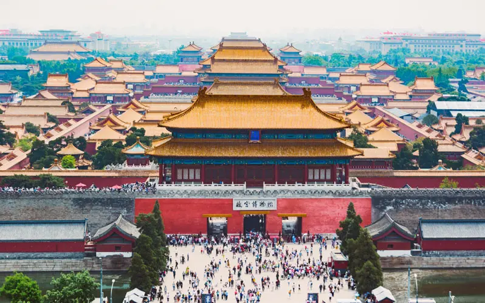

Chinese Minorities Map
Learn about the 6 unique minority ethnic groups in China!
Colors represent their origins, sizes of the shape represent the population
Manchu People
History
The Manchu ethnic group in China are the descendants of the Manchus and Mongolians who invaded the Ming Empire and created the Qing Empire (1664–1912). Now about 11 million live in China. After the founding of the Qing Empire, the Manchus were assimilated with the majority Han. Now, only a small percentage speak the traditional language.
The Forbidden City is where you can see how the Manchu dynastic clan lived together
Manchu Hair Styles
Traditionally, as recently as about 100 years ago, the Manchu men wore pigtails, but they shaved the front of their heads as in the picture. They thought this hairstyle made movement easier when in the field or on horseback. During the Qing Dynasty, their hairstyles developed over time. They imposed this hairstyle on the Han people.

Manchu Hairstyles